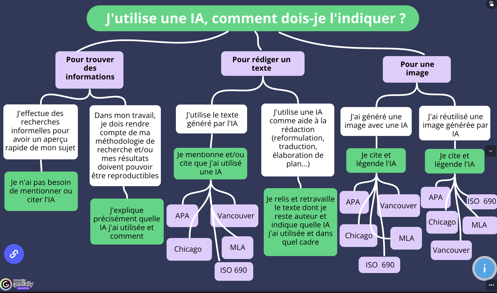

Etudiant·e·s
i. Mieux comprendre l'IA
ii. Mieux utiliser l'IA
Arbre décisionnel
Un arbre décisionnel pour expliquer aux étudiants quand et comment documenter leur usage de l'IA. Produit par l'Université de Nantes.

No-Vibe Guide to LLMs
Un guide pour comprendre les LLMs, avec des explications claires et des exemples concrets. Il est conçu pour être accessible à tous, même ceux qui n'ont pas de connaissances techniques approfondies. Composé par Pedro Morales-Almazan, professeur de Mathématiques à l'Université de Santa-Cruz.
Le site web.
Voir surtout : - La page sur les 'best practices' - La page sur les 'tips, tricks and useful prompts'
On trouve par exemple l'échelle "TRUST" que Morales-Almazan propose pour évaluer votre niveau de réflexivité sur votre usage de l'IA - ou celui des étudiant·e·s - lorsque celle-ci est intégré à des pratiques de travail :
| Étape | Dimension | Description |
|---|---|---|
| Entraînement | Données (1 pt) | Évaluer les sources de données, leur qualité, les droits d'auteur et la vie privée liés aux données d'entraînement. |
| Entraînement | Empreinte (1 pt) | Prendre en compte l'impact environnemental et humain du LLM. |
| Traitement | Explicabilité (3 pts) | Dans quelle mesure l'utilisateur comprend-il les résultats produits. |
| Traitement | Vie privée (3 pts) | Évalue les pratiques de propriété, de stockage et d'utilisation des données. |
| Évaluation | Évaluation (9 pts) | Mesure l'efficacité et la précision des résultats produits. |
| Évaluation | Responsabilité (9 pts) | Garantit une responsabilité humaine claire à chaque étape du processus. |
Cela permet ainsi d'obtenir un score final. Morales-Almazan propose des actions concrètes en fonction de ce score :
| Niveau | Score | Action |
|---|---|---|
| High TRUST | > 18 pts | Mettre en œuvre le système tout en réévaluant périodiquement si l'une des dimensions a évolué. |
| Moderate TRUST | 13 à 18 pts | Identifier et corriger les faiblesses dans les étapes les moins bien notées. Réévaluer avant de mettre en œuvre le système. |
| Low TRUST | 5 à 2 pts | Revoir toutes les étapes du système pour vérifier leur conformité aux politiques et réglementations en vigueur. |
| Minimal TRUST | < 5 pts | Envisager une refonte du système et/ou explorer une alternative. Consulter les responsables et rechercher d'autres solutions. |